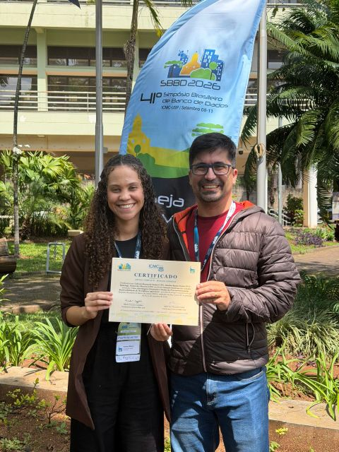
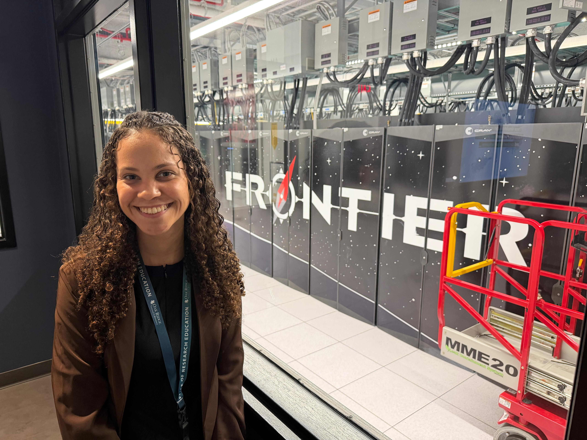
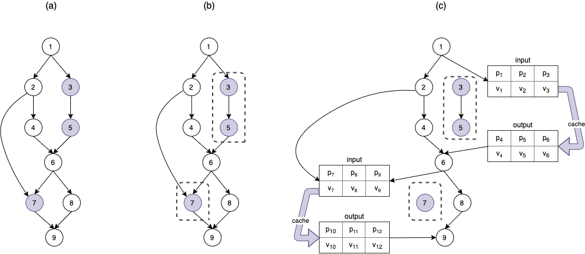
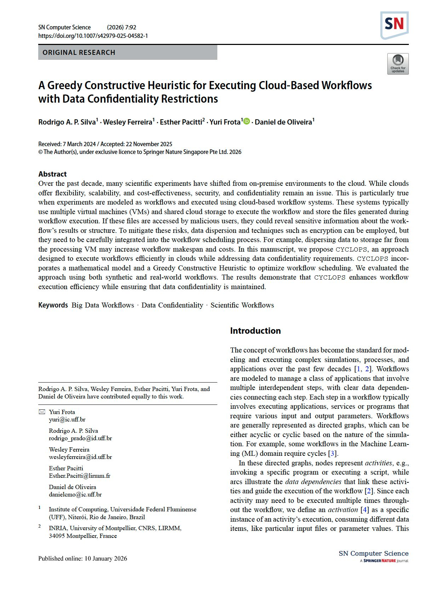
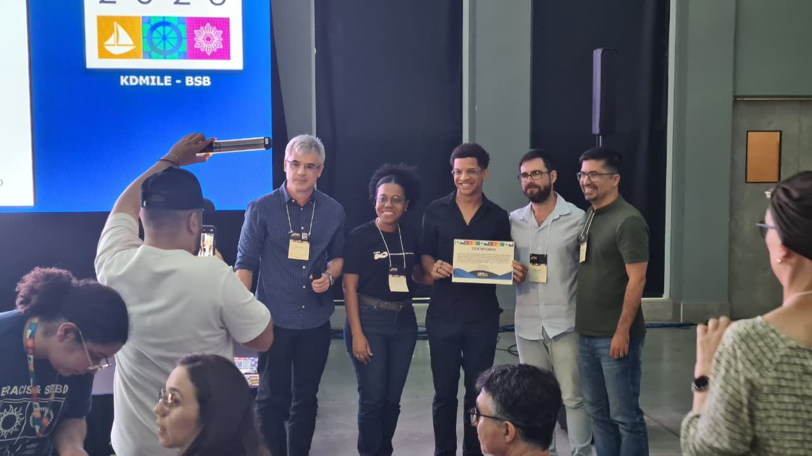
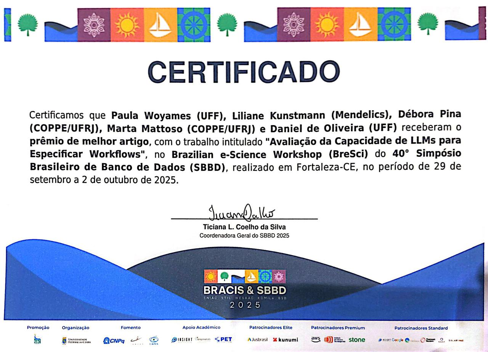
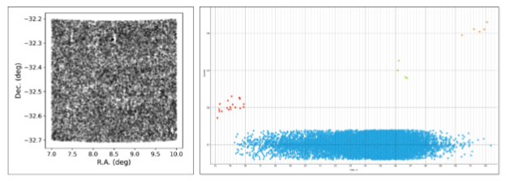
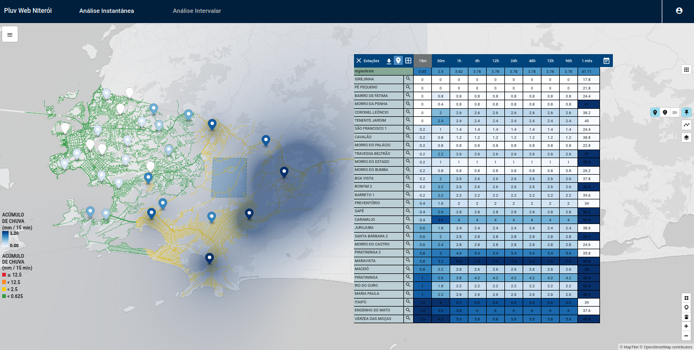
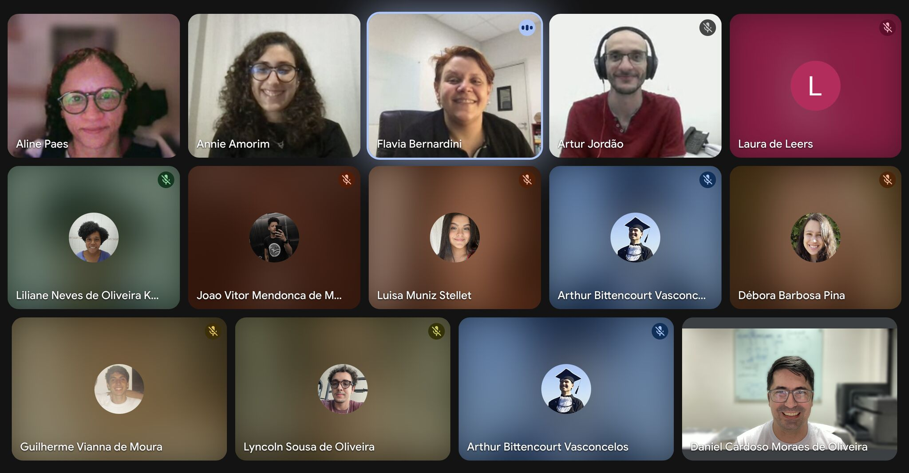

UFFESCIENCE
ANCHOR Receives Honorable Mention at SBBD 2026
#UFF #UFFeScience #SBBD2026 #AgenticAI #AgenticWorkflows #Provenance #W3CPROV #Research
 Daniel de OliveiraInstitute of Computing / UFF
UFFeScience
Daniel de OliveiraInstitute of Computing / UFF
UFFeScience
Here you can find the latest news, interviews, and updates related to my research, teaching, and collaborations. Stay tuned for new insights and developments.

#UFF #UFFeScience #SBBD2026 #AgenticAI #AgenticWorkflows #Provenance #W3CPROV #Research

#UFF #UFFeScience #ORNL #Research #Internship #AgenticAI #ProvenanceManagement #ScientificCollaboration

#ScientificWorkflows #CloudComputing #DistributedSystems #HighPerformanceComputing #Research
Read publication
#SNComputerScience #ScientificWorkflows #CloudComputing #DataConfidentiality #CYCLOPS
Read publication
#BestDemo2025 #SBBD2025 #BRACIS2025 #Containers #Workflows #BigData
Read publication
#BreSci2025 #SBBD2025 #BRACIS2025 #LLMs #UFFeScience #BigData
Read publication
#Astronomy #FederatedLearning #MachineLearning #CloudComputing #SSCAD2025 #BigData
Read publication
#SIBGRAPI2025 #UrbanFlooding #RainfallMonitoring #SmartCities #Research
Read publication